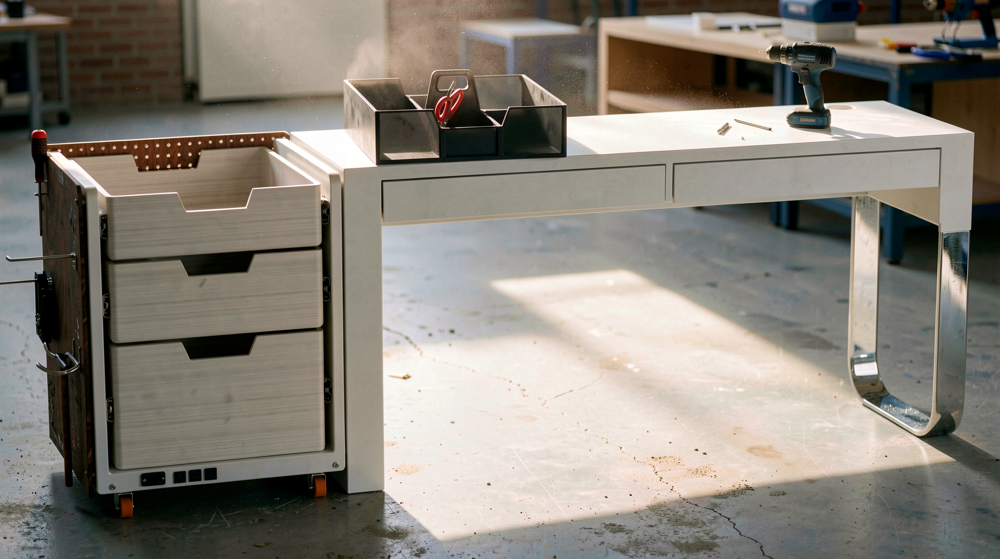
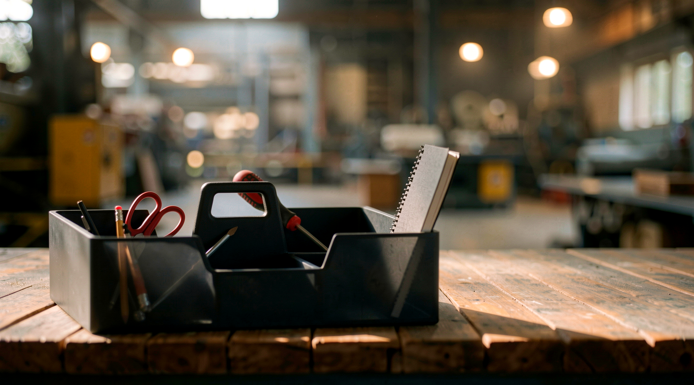
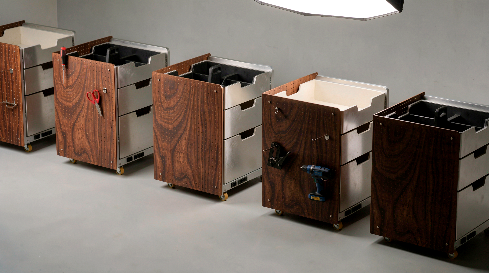
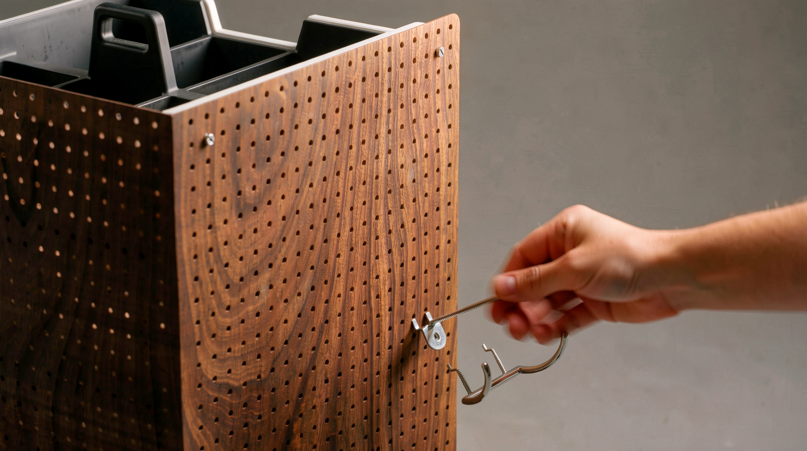

A mobile workshop system built for the way craftsmen actually work.
The Problem
Workshop disorganization isn't accidental — it's systemic. Three compounding failure modes show up consistently across craftsmen and tradeshow vendors who work across multiple spaces:
- Hard to find tools — scattered surfaces with no intentional system. Every job starts with a search.
- Doesn't adapt — static storage that can't reconfigure as work scope changes. One project layout, locked in.
- Junk drawers — miscellaneous items with no home. Every unit eventually becomes catch-all storage.
These aren't independent problems. The same storage failure that creates a junk drawer also creates a tool hunt and a workflow that can't shift. The solution had to address all three at once.

Workshop and tradeshow contexts share the same need: scan, grab, return — under time pressure.
Competitive Landscape
The market splits across two axes: Rigid ↔ Flexible and Secure ↔ Convenient. Mapping existing products revealed a consistent gap at the intersection that mattered most.
- Rigid + Secure — Tool chests (Craftsman, Milwaukee), office pedestal drawers. Lock well; can't reconfigure; tools fully hidden.
- Rigid + Convenient — IKEA-style drawer units, desktop organizers, Stanley racks. Easy access; no mobility; no security.
- Flexible + Convenient — Pegboard walls, bin storage, open shelving. Adaptable; not mobile; no lockdown capability.
- Flexible + Secure (the gap) — One occupant: the full-scale industrial rolling workbench with pegboard back and locking casters. Exists only at commercial shop scale, in utilitarian form. No craft or tradeshow equivalent.
That gap was the design target.
Visible tools signal craft competence — pegboard and open hooks communicate expertise, not disorganization.
Visual Brand Language
Reference: professional maker environments — fabrication studios, well-organized workshops, textile and production spaces. Consistent themes across the research:
- Organized visual density — tools and materials in intentional arrangements
- Warm wood + metal material pairing as a marker of craft-grade quality
- Tool visibility as craft identity — not organizational failure

Workshop context — tools visible, pegboard in active use

Tradeshow context — same unit reads as a floor-display product
Design Brief
IHA Student Design Competition, solo track. The brief: workshop and tradeshow professionals need storage that can move with them, adapt as work changes, and keep tools visible and immediately accessible — without sacrificing security or looking like generic shop equipment.
The dual context made the requirements unusually strict. A unit that works on a tradeshow floor has to perform as a daily-use storage tool and a floor-display product simultaneously. The visual language had to earn both reads.
Insight → Requirement
Mapping each research finding to a hard design requirement.
Tools scattered with no system — can't locate under time pressure
Visible tool access — pegboard or open-face storage required at all times
Static storage fails when work scope changes — configurations lock in
Reconfigurable without tools or replacement parts — layout adapts as work evolves
Mobile solutions hide everything; visible solutions don't move
Mobile + lockable — rolls freely between spaces, locks in place during active use
Job-site work requires carrying tools beyond the main unit
Portable sub-organizer — removable tray carries independently to any job site
Electrical access on-site is always improvised — extension cords and power strips on the floor
Integrated power access — outlets and USB charging built into the unit structure
Tradeshow context demands a material language that reads as craft-grade, not utilitarian shop equipment
Professional material language — hardwood + metal frame that holds up visually at 20 feet
Ideation
Wide exploration before any direction was locked. Pegboard walls, enclosed rolling towers, drawer-only units, open slab-top benches — the goal was to exhaust the option space and stress-test each concept against all six requirements before committing.
No single direction from early ideation hit all six. Two finalist directions emerged: a fully enclosed rolling unit with a removable drawer insert, and a side-access drawer tower with pegboard panel sides. The pegboard-and-drawer hybrid became the lock — it was the only concept that satisfied the visible access, reconfigurable, and portable sub-organizer requirements simultaneously.
Portable organizer works well. Pegboard access lost — tools fully hidden. Fails visible access requirement.
Visual access strong. Side pegboard panels add structural complexity — attachment to main frame unsolved at this stage.
Solves visibility but not secure storage. No drawer system, no portable organizer. Fails four of six requirements.
Too wide for tradeshow aisle. Flat slab top hides tools — no visible access, no pegboard. Doesn't meet the brief.
Satisfies all six requirements. Pegboard sides for visible access; drawer tower for secure storage; removable insert adds portability.
Material Direction
Walnut + aluminum was locked early as the material language. The decision wasn't aesthetic first — it was positional. At 20 feet on a tradeshow floor, walnut reads as craft-grade in a way that steel, MDF, or painted plywood simply doesn't. Aluminum extrusion for the frame gave structural precision without the utilitarian visual weight of steel.
The combination puts the unit in a clear category: not shop equipment, not furniture, but craft infrastructure. That gap is where the IHA brief lived.

CMF callout render — walnut shell, aluminum extrusion frame, steel pegboard panels

Pegboard side panel — hooks reconfigure without tools, no fixed positions

Final design — walnut + aluminum, 3-drawer tower, dual pegboard sides, locking casters
Four Systems, One Unit
The final design integrates four core systems that work independently and together. Every system maps directly to a design requirement — nothing was added for aesthetics alone.
- Pegboard side panels — hook attachments reconfigure to any layout without tools or replacement parts. The visible tool access requirement, solved structurally.
- Open-top removable organizer — the top drawer insert lifts out as a portable tray. Take it to the job site, bring it back. The main unit stays put.
- Locking casters — rolls freely on hardwood or concrete; locks in place during active use. Rated for the unit's full loaded weight.
- Integrated power strip — outlets and USB charging built into the base structure. Cords route internally. No external power strip velcroed to the side.

Removable organizer — lifts free from the top drawer, carries independently to any job site

Exploded view — modular sub-systems: frame, drawers, panels, power, casters
Material Story
Walnut + aluminum isn't a finish choice — it's a positioning decision. The combination communicates price point, quality, and intended context on first glance. It reads as craft-grade without crossing into furniture or fine woodworking territory.
In a tradeshow context, that read matters. Vendors and craftsmen evaluating tools on a show floor make a category judgment within seconds. The material language has to earn the right category before any feature is legible. Functional but considered, durable but not utilitarian.

Multi-angle spread — front, three-quarter, and side views

Pattern render — material and texture detail across repeat views

Final product — the same unit that works in a shop reads as a floor display on a tradeshow aisle
Reflection
Designing for a tradeshow context forced thinking about two simultaneous perspectives: daily-use storage tool AND floor-display product. The visual language had to earn both reads — and that constraint shaped every decision from material to proportion to how the power integration was concealed.
The most useful insight came from the competitive audit: the Flexible + Secure gap exists not because it's a hard product to design, but because most storage design starts from a single-context assumption. A tool chest assumes a fixed shop. A pegboard assumes a fixed wall. Nomad Drawer was built on the assumption that where you work changes, and your storage should keep up.


